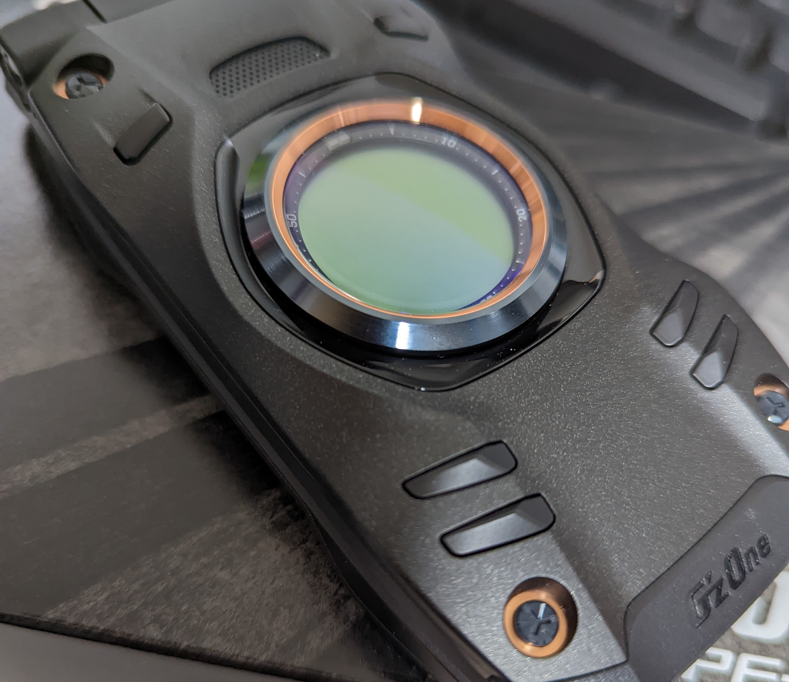
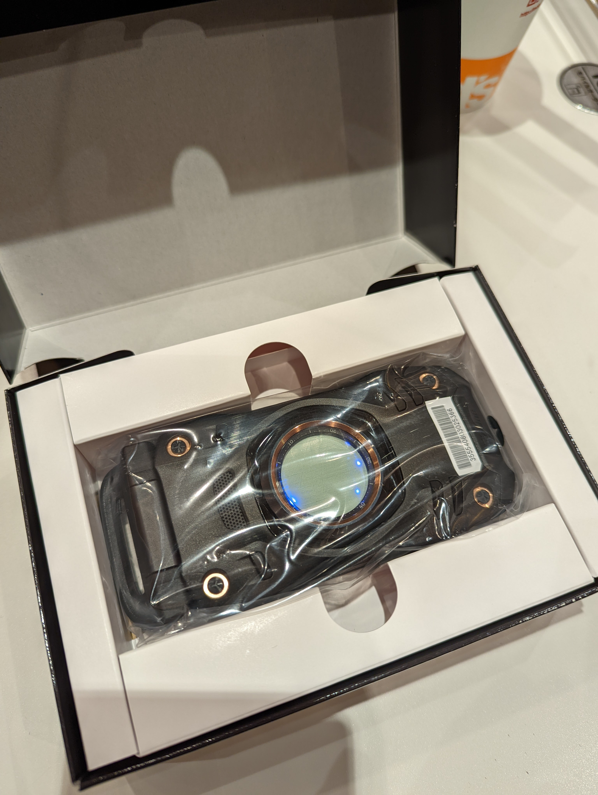
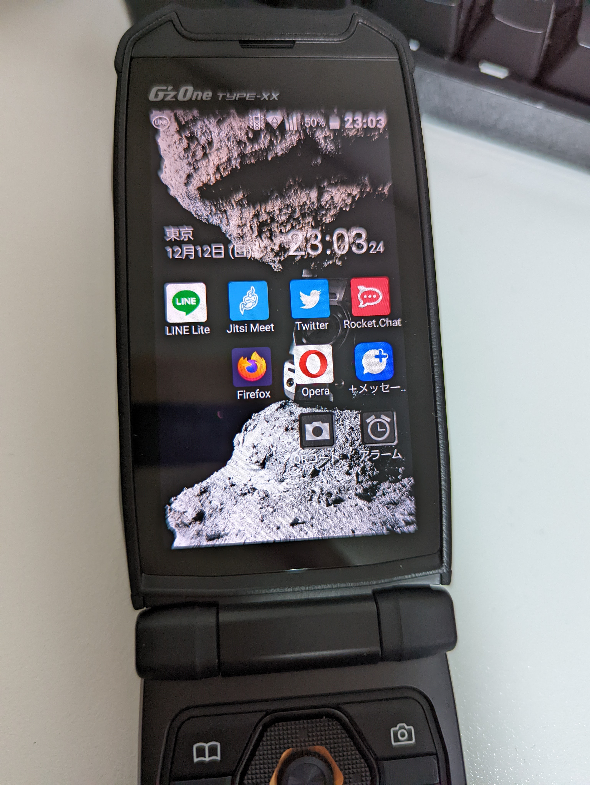

【G’zOne TYPE-XX】物理キーと防水の組み合わせは最高である。

G'zOne TYPE-XXが発売されたのでヨドバシカメラで移動機物品販売を利用して購入したわけだが、クソ高いMNOのプランを契約せずとも買えるなら、これくらいの労力なら支払ってもいいかもしれないが、やはりめんどくさいものだ。
物理テンキー搭載携帯電話を買ったのはINFOBAR XV以来、折りたたみ型物理テンキー搭載携帯電話としてはSH-07F以来だが、筐体のデザインもかっこよく、カシペンが登場したりと粋な計らいにセンスを感じる一品となっている。
INFOBAR XV同様にAndroidOSベースの為、アプリケーションがAPKファイルからインストールできるので全てが完璧に動くわけではないにしても、AndroidOS向けのアプリケーション資産が扱えるのは魅力と言えるだろう。
昨今のなんでもかんでも携帯電話でやろうとする思想とは相容れず、基本的にパソコンが使える環境下であれば全てパソコンで賄うので、携帯電話は最低限のブラウジング、連絡手段としての役割さえ担って貰えればそれで十分で、GzOne Type-XXは僕にとっての携帯電話としての用途を満たしてくれる一品になりえる。
そして静電式タッチパネルは水滴による誤動作がある事から防水且つ物理キー搭載携帯電話と言うのは非常に素晴らしい物である。

